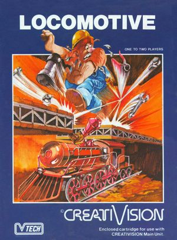
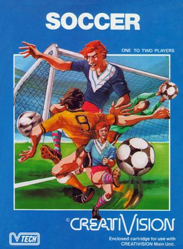
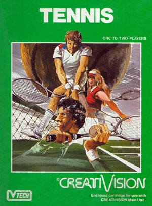

VTech CreatiVision
Released: 1982
14 games
The VTech CreatiVision, usually just referred to as CreatiVision, is a second generation (1976-1992) video game console developed and distributed by VTech. It was released in early 1982 in Europe at a retail price of £499. The console was also released in Australia (1988) and New Zeland (1988) as the Dick Smith Wizard. The CreatiVision was a hybrid computer and home video game console. The console was discontinued in early 1986.
| Cover | Title | Year | Genre | Publisher | Developer |
|---|---|---|---|---|---|

|
Air/Sea Attack | 1981 | Shooter • Vehicle Simulation | VTech | VTech |

|
Astro Pinball | 1982 | Pinball | VTech | VTech |

|
Auto Chase | 1981 | Action • Racing | VTech | VTech |

|
Chopper Rescue | 1982 | Shooter | VTech | VTech |
|
 |
Locomotive | 1983 | Action | VTech | VTech |

|
Mouse Puzzle | 1982 | Puzzle | VTech | VTech |

|
Music Maker | 1983 | Education • Music | VTech | VTech |

|
Planet Defender | 1981 | Shooter | VTech | VTech |

|
Police Jump | 1982 | Action | VTech | VTech |
|
 |
Soccer | 1983 | Sports | VTech | VTech |

|
Sonic Invader | 1981 | Shooter | VTech | VTech |

|
Stone Age | 1984 | Action | VTech | VTech |

|
Tank Attack | 1981 | Shooter • Vehicle Simulation | VTech | VTech |
|
 |
Tennis | 1981 | Sports | VTech | VTech |